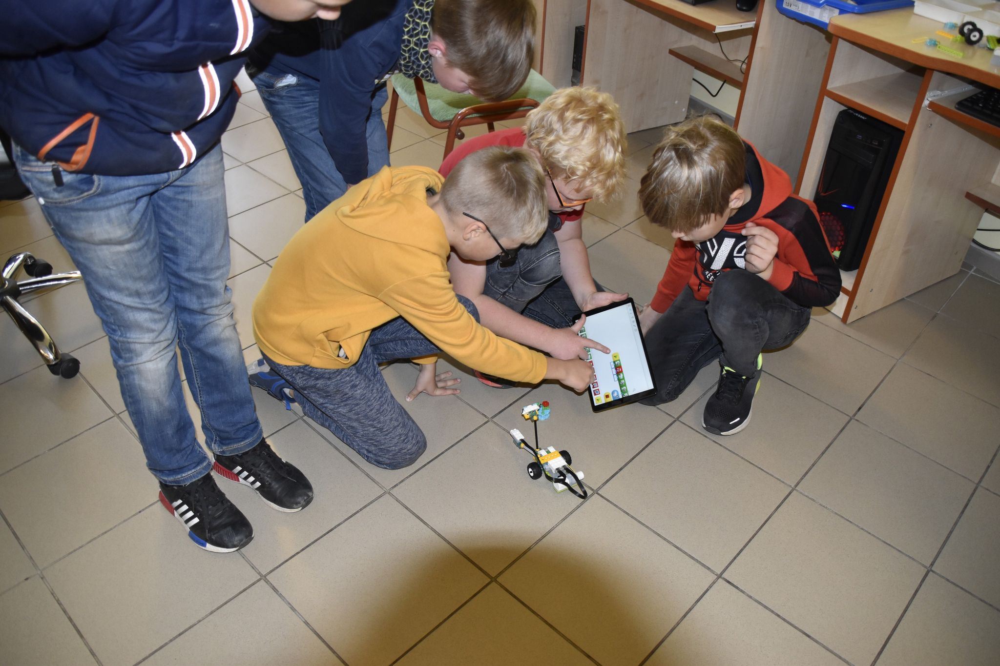
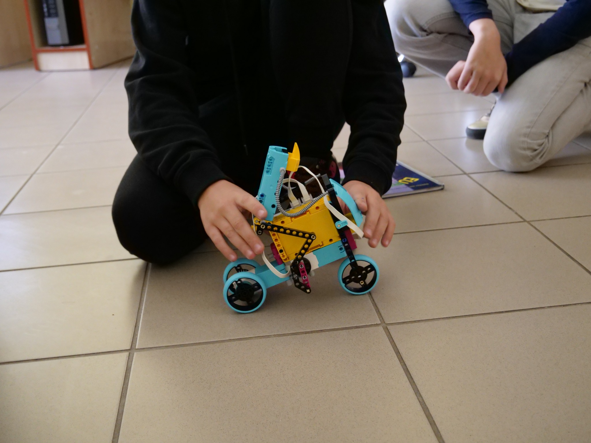
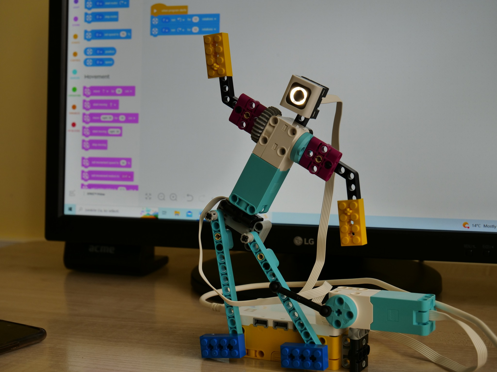

"Robotai aplink mus - įdomus ir inovatyvus mokymo būdas mokiniams". Tai veiklos forma, kurioje mokiniai įdomiai ir inovatyviai įgyja žinių ir įgūdžių robotikos srityje. Ši veikla skatina mokinių kūrybiškumą, problemų sprendimo gebėjimų tobulinimą ir komandinį darbą. Naudojant šį metodą mokiniai gauna galimybę susipažinti su robotų konstravimu, programavimu ir valdymu. Jie dirba su specialiai moksleiviams skirtais robotų komplektais, kurie leidžia įsigilinti į įvairias inžinerines ir programavimo uždavinius. Moksleiviai gali sukurti savo robotus, juos programuoti tam tikrų veiksmų atlikimui ar dalyvauti robotų varžybose, kuriose išbandomi jų robotų gebėjimai. Tai suteikia mokiniams daug privalumų, skatina mokymosi motyvaciją, nes mokiniai pamato tiesioginę ir praktinę naudą iš to, ką jie mokosi. Jie gali pamatyti, kaip įdėtos pastangos ir sugalvotos idėjos tampa realybe. Mokiniai turi galimybę eksperimentuoti su skirtingais sprendimais ir rasti naujus būdus, kaip išspręsti problemas. Ši veikla skatina mokinio kritinį mąstymą, logiką ir gebėjimą dirbti su duomenimis bei programuoti. Moksleiviai turi dirbti kartu, dalintis idėjomis, problemomis ir atlikti užduotis kartu. Tai puiki galimybė tobulinti komunikacijos, bendradarbiavimo ir lyderystės įgūdžius, artu yra integruojamos ir kitos mokymo sritys (fizika, informacinės technologijos ir matematika). Šios veiklos metu mokiniai ne tik plėtoja konkrečias robotikos žinias ir įgūdžius, bet ir ugdo svarbias asmenines savybes. Tai apima atkaklumą, problemas sprendžiantį požiūrį ir gebėjimą priimti iššūkius. Todėl galima teigti, kad „Robotai aplink mus“ yra naudinga ir įtraukianti veikla, kuri suteikia mokiniams galimybę plėtoti įvairias svarbias kompetencijas ir įgūdžius. Ji palaiko jų mokymosi motyvaciją, kūrybiškumą, bendradarbiavimą ir supratimą apie technologijas. Keletas akimirkų iš užsiemimų:
  Informacinės technologijos
Fizika
Matematika